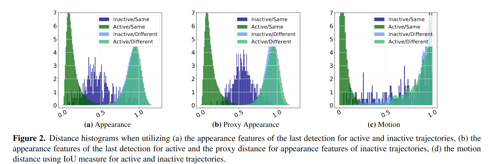
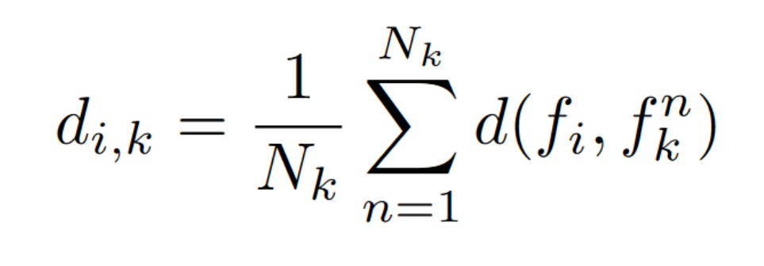
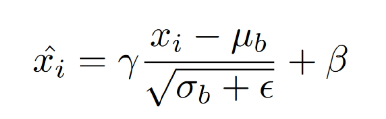

这篇文章收录于CVPR2023
贴一下原文链接
一、Introduction
作者提出在MOT工作中，TbD（Tracking by Detection）是最常见的范式，即先在视频帧中检测出目标，然后进行关联。大多数的关联模型都是基于运动和外观线索，近年来基于注意力机制的方式十分火热，作者希望通过传统的TbD也可以达到端对端模型的性能。于是提出两个关键设计——on-the-fly域适应，以及对于活跃与不活跃轨迹的不同处理。
reID在MOT任务重性能不佳的两个原因：
①reID模型在相邻帧中外观变化小，但是在时间间隔较长的情况下，特别是在遮挡情况下外观特征变化剧烈。
②在不同数据集上训练的reID模型无法通用，即鲁棒性较差。
为了解决上述问题，作者使用加权的方式将reID和简单的线性运动模型相结合，面对不同的数据集可以赋予不同的权重。
作者提出的模型在四个数据集上达到了SOTA。
二、Related Work
Graph-Based Approches： 在TbD中的常见形式是将每个检测视为图中的节点，将节点相连形成轨迹，GHOST可以不使用复杂的图模型获得强大的跟踪器。
Motion-Based Association： 使用运动和位置新西进行逐帧关联，跟踪器利用两个相邻帧之间的空间相邻性进行匹配，最典型的就是卡尔曼滤波。最新的工作引入了基于注意力机制的跟踪范式，使用了复杂的运动模型，需要复杂的训练策略。GHOST表明简单的直线运动模型足以在大多数情况下对短期关联进行建模。
Appearance-Based Association： 为了长期关联场景，许多方法使用额外的基于外观的再识别网络，但是这种只使用外观线索而不使用运动线索的方法使用十分复杂的关联方案，也很难得出正确的结论。相比GHOST不依赖复杂的过程，只在一个简单的TbD跟踪器上结合轻量级的运动和外观线索，只需要很少的训练数据。
Person Re-Identification and Domain Adaptation： Person re-ID是根据外观线索，从给定的图库中查询相同行人的边界框。但对领域外的数据集进行评估时，re-ID模型的性能往往会显著的降低，在应用中可以使用跨数据集评估方式将模型在给定目标中训练。GHOST使用简单的动态域适应方法增强了外观模型，使其更适应MOT任务。
三、 Methodology
3.1 跟踪器
在跟踪中，在每个时间t中使用线性运动模型产生轨迹对应的预测位置，检测被分配给轨迹，若轨迹未与检测匹配则定义为不活跃，否则活跃，使用内存库来保存不活跃轨迹，将检测与实况轨迹进行匹配。
通过匈牙利算法利用二分匹配将连续镇上的现有检测关联起来。该分配由成本矩阵驱动，该成本矩阵由外观和运动特征的加权和填充，最后利用匹配阈值筛选匹配后的轨迹检测对。
3.2 外观模型
外观模型基于ResNet50设计，在末端增加了一个全连接层进行下采样，并在普通人reID数据集上进行训练（没有在MOT数据集上进行训练）。
提出两种设计提升外观模型：
（1）对于活跃与不活跃轨迹的不同处理；
（2）on-the-fly域适应

图（a）：外观特征距离直方图，分析了最新检测与活跃或非活跃轨迹之间外观特征的距离直方图，深色表示了轨迹与相同身份（正样本）的距离直方图，浅色表示了轨迹与不同身份（负样本）的距离直方图。
图（b）：外观特征的代理距离直方图，分析了最新检测与活跃或非活跃轨迹之间外观特征的代理距离直方图，深色表示了轨迹与相同身份（正样本）的距离直方图，浅色表示了轨迹与不同身份（负样本）的距离直方图。
图（c）：采用IoU度量的活跃非活跃轨迹运动距离直方图
对活跃非活跃轨迹的不同处理： 对于活跃轨迹，利用在t-1帧分配给轨道j的检测外观特征来计算t帧检测i的距离。
对于非活跃轨迹，计算非活动轨迹k中所有Nk检测的外观特征向量与新的检测i间的距离，然后利用这些距离的平均值作为代理距离，即：

从Figure 2可以看出活跃与非活跃轨迹距离直方图的显著差异，因此对于活跃轨迹与非活跃轨迹在二分匹配时需要采取不同的处理方式，使用阈值确定允许匹配的成本，不同阈值确定了距离直方图中深色与浅色的划分，对于活跃和不活跃轨迹使用两种不同阈值，比起级联匹配，GHOST的赋值可以避免每帧多次运用二分匹配。
动态域适应： 前面提到过将动态域适应技术应用于reID领域可以防止reID模型应用于不同MOT序列时的性能下降。
最近，有一些reID的工作引入了DA的思想来实现跨数据集泛化的方法，将归一化层适用于Instance Batch、Meta Batch或Camera - Batch Normalization层。与上述方法相反，我们在架构的BN层中使用当前批次特征的均值和方差，该特征对应于测试时间内的一帧检测：

其中xi是样本i的特征，μb和σb是当前批次的均值和方差，γ和β在训练时被学习。由于一个序列之间的图像都具有高度相似的底层分布，因此不需要多个BN层就可以很好的近似序列的统计信息，并且可以定义一个适合于所有序列的匹配阈值τi，就可以很有效的分离所有直方图。
将这些应用于外观模型，使对遮挡更适应，更适合不同序列。
由于没有看代码，实验部分也就没仔细看，留到开始看代码了认真看实验